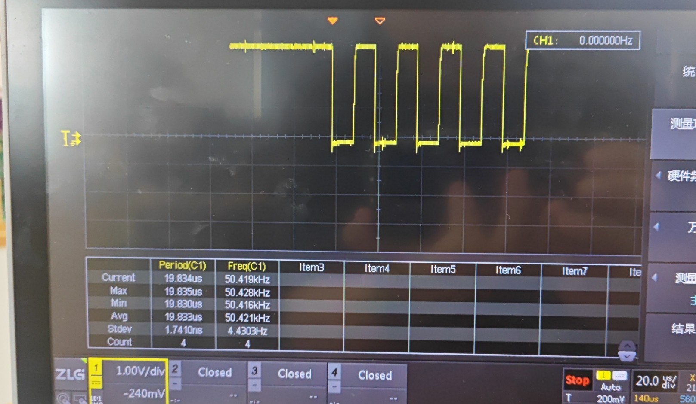
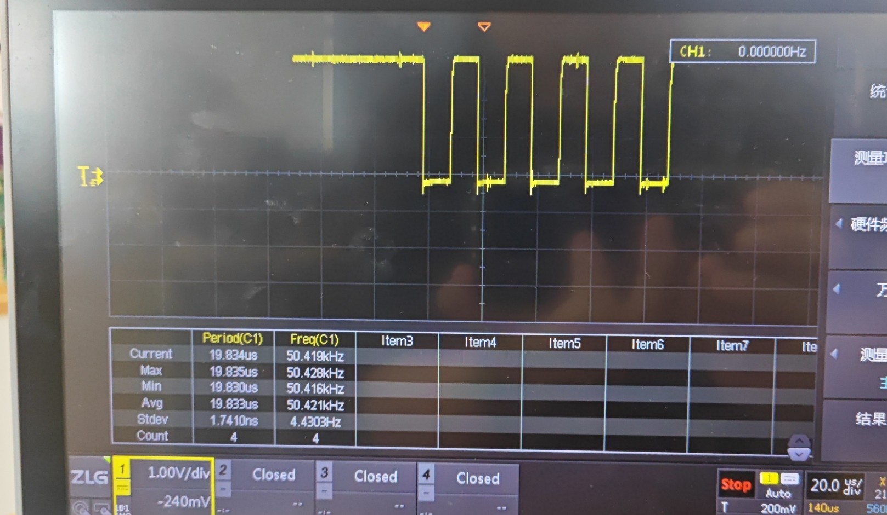

OK3588 Linux 5.10.209 Buildroot HDMI DDC I2C Rate Modification
Document classification: □ Top secret □ Secret □ Internal information ■ Open
Copyright
The copyright of this manual belongs to Baoding Folinx Embedded Technology Co., Ltd. Without the written permission of our company, no organizations or individuals have the right to copy, distribute, or reproduce any part of this manual in any form, and violators will be held legally responsible.
Forlinx adheres to copyrights of all graphics and texts used in all publications in original or license-free forms.
The drivers and utilities used for the components are subject to the copyrights of the respective manufacturers. The license conditions of the respective manufacturer are to be adhered to. Related license expenses for the operating system and applications should be calculated/declared separately by the related party or its representatives.
Revision History
Date |
Version |
Revision History |
|---|---|---|
07/30/2025 |
V1.0 |
Initial Version |
HDMI DDC I2C Rate Modification
This manual is applicable to the Buildroot and Ubuntu 22.04 systems running on Linux 5.10.209. The objective of this manual is to explain how to modify the DDC’s I2C for the 209 kernel.
I. DDC I2C Speed Configuration
Modify the settings according to the method provided in the RK manual as follows:
Currently, the I2C speed is adjusted by configuring the high and low clock (clk) levels’ durations. Below is the configuration for an empirically measured I2C speed of 50 kHz:
&hdmi {
ddc-i2c-scl-high-time-ns = <9625>;
ddc-i2c-scl-low-time-ns = <10000>;
}
To adjust the I2C speed, simply modify these two values proportionally. For example, to set the speed to 100 kHz, use the following calculation method:
&hdmi {
ddc-i2c-scl-high-time-ns = <4812>;
ddc-i2c-scl-low-time-ns = <5000>;
}
T_SCL = T_high + T_low = scl_high_time + scl_low_time
f_SCL = 1 / T_SCL
II. Non-functionality in Kernel 5.10.209
In the 5.10.209 kernel version, although the dw-hdmi-qp.c file reads the ddc-i2c-scl-low-time-ns and ddc-i2c-scl-high-time-ns values, there is no function to write these values to the corresponding registers.
Therefore, this functionality needs to be supplemented. The patch is as follows:
diff --git a/arch/arm64/boot/dts/rockchip/OK3588-C-common.dtsi b/arch/arm64/boot/dts/rockchip/OK3588-C-common.dtsi
index ca57b7d2d..432d20392 100644
index ca57b7d2d..432d20392 100644
--- a/arch/arm64/boot/dts/rockchip/OK3588-C-common.dtsi
+++ b/arch/arm64/boot/dts/rockchip/OK3588-C-common.dtsi
@@ -976,6 +976,8 @@ &pwm6 {//dsi1
&hdmi0 {
enable-gpios = <&gpio4 RK_PB1 GPIO_ACTIVE_HIGH>;
+ ddc-i2c-scl-high-time-ns = <9625>;
+ ddc-i2c-scl-low-time-ns = <10000>; //Take 50khz as an example
status = "disabled";
};
diff --git a/drivers/gpu/drm/bridge/synopsys/dw-hdmi-qp.c b/drivers/gpu/drm/bridge/synopsys/dw-hdmi-qp.c
index ff53a9dbf..0a72d2854 100644
--- a/drivers/gpu/drm/bridge/synopsys/dw-hdmi-qp.c
+++ b/drivers/gpu/drm/bridge/synopsys/dw-hdmi-qp.c
@@ -998,9 +998,22 @@ static const struct hdmi_quirk *get_hdmi_quirk(u8 *vendor_id)
static void dw_hdmi_i2c_init(struct dw_hdmi_qp *hdmi)
{
+ u64 scl_high_cnt, scl_low_cnt, val;
+
+ scl_high_cnt = hdmi->i2c->scl_high_ns;
+ scl_low_cnt = hdmi->i2c->scl_low_ns;
+
+ scl_high_cnt = scl_high_cnt * hdmi->refclk_rate;
+ scl_high_cnt = DIV_ROUND_CLOSEST_ULL(scl_high_cnt, 1000000000);
+
+ scl_low_cnt = scl_low_cnt * hdmi->refclk_rate;
+ scl_low_cnt = DIV_ROUND_CLOSEST_ULL(scl_low_cnt, 1000000000);
+
+ val = (scl_high_cnt & 0xffff) << 16 | (scl_low_cnt & 0xffff);
+
/* Software reset */
hdmi_writel(hdmi, 0x01, I2CM_CONTROL0);
-
+ hdmi_writel(hdmi, val, I2CM_SM_SCL_CONFIG0);
hdmi_modb(hdmi, 0, I2CM_FM_EN, I2CM_INTERFACE_CONTROL0);
/* Clear DONE and ERROR interrupts */

III. Testing Procedure
The waveform of ddc-i2c can be viewed by disconnecting and opening it with the following command
echo off > /sys/class/drm/card0-HDMI-1/status
echo on > /sys/class/drm/card0-HDMI-1/status
 
